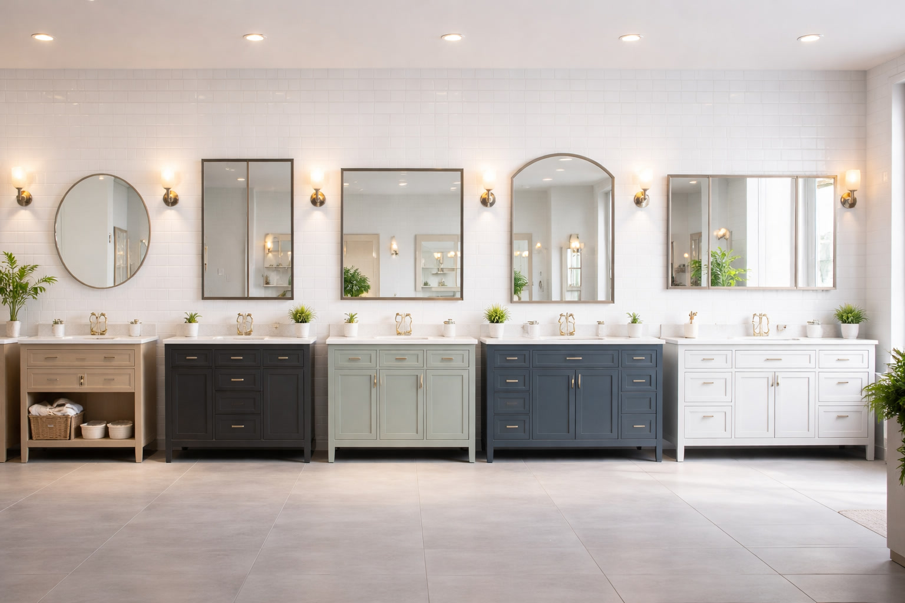

How to Choose the Right Bathroom Mirror Size: Complete Buyer's Guide (2026)

Product Researcher & Bathroom Design Expert

Quick Answer
Your bathroom mirror should be the same width or 2-4 inches narrower than your vanity. For a 36" vanity, get a 32-36" mirror. For a 48" vanity, get a 44-48" mirror. Height should place the center of the mirror at eye level (57-65" from the floor), with 4-6" clearance above the faucet/backsplash. When in doubt, go slightly larger — an undersized mirror is the most common sizing mistake.
Table of Contents
- The Golden Rule of Mirror Sizing
- Step 1: Determine the Right Width
- Step 2: Determine the Right Height
- Step 3: Correct Height Placement
- Step 4: Choose the Right Shape
- Special Case: Double Vanity Mirrors
- Special Case: Small Bathrooms
- 5 Common Mirror Sizing Mistakes
- Complete Size Chart by Vanity Width
- FAQ
The Golden Rule of Mirror Sizing
Interior designers follow one fundamental rule for bathroom mirror sizing: the mirror should be proportional to the vanity, not the wall. This is the most important concept to understand because most people make the mistake of choosing a mirror based on available wall space rather than vanity width.
A mirror that matches or is slightly narrower than your vanity creates visual balance. A mirror wider than the vanity looks top-heavy and awkward. A mirror significantly narrower than the vanity looks undersized and disconnected.
The 80% Rule: If you want to leave visible margins on each side, choose a mirror that's approximately 80% of your vanity width. This leaves 10% margin on each side and creates a clean, balanced look. Example: 48" vanity x 0.80 = 38.4", so a 36-40" mirror would be ideal.
Step 1: Determine the Right Width
Start by measuring your vanity from edge to edge (including the countertop overhang, not just the cabinet width). Then use these guidelines:
Width Guidelines
- Match the vanity width for a modern, edge-to-edge look (most popular in contemporary bathrooms)
- 2-4 inches narrower on each side for a traditional, balanced look with visible margins
- Never wider than the vanity — this is the cardinal sin of mirror sizing
- Minimum 70% of vanity width — anything narrower looks too small
The trend in 2026 is toward mirrors that match the full vanity width. This creates a clean, seamless look — especially when paired with frameless or thin-framed mirrors. However, if you have wall sconces on either side of the mirror, you need to account for the sconce width and leave at least 3-4 inches of clearance between the mirror edge and each sconce.
Width by Vanity Size
| Vanity Width | Minimum Mirror Width | Ideal Mirror Width | Maximum Mirror Width |
|---|---|---|---|
| 24" | 18" | 20-24" | 24" |
| 30" | 22" | 26-30" | 30" |
| 36" | 28" | 32-36" | 36" |
| 42" | 32" | 36-42" | 42" |
| 48" | 36" | 42-48" | 48" |
| 60" | 48" | 54-60" | 60" |
| 72" | 56" | 64-72" | 72" |
Step 2: Determine the Right Height
Mirror height is determined by two factors: the height of the tallest person using the mirror, and the available wall space between the backsplash/faucet and the ceiling.
Height Guidelines
- Standard mirror height: 28-36 inches for most bathrooms
- For tall users (6'+): Consider 36-40 inches or taller
- For bathrooms used by varying heights: Go taller (36"+) to accommodate everyone
- Bottom edge: At least 4-6 inches above the faucet or backsplash top
- Top edge: At least 4-6 inches below the ceiling (or soffit)
For rooms with standard 8-foot ceilings, a 30-36 inch tall mirror is the sweet spot. This leaves comfortable clearance above the faucet and below the ceiling. In bathrooms with 9-10 foot ceilings, you can go taller — up to 40-48 inches — to fill the vertical space and make the room feel more grand.
Measuring Tip: Use painter's tape to outline the mirror dimensions on your wall before purchasing. Stand at your normal vanity position and check: can you see your full face and at least to your shoulders? If not, the mirror is too small or too high.
Step 3: Correct Height Placement
Even the perfectly sized mirror will look wrong if it's hung at the incorrect height. The most common mistake is hanging a mirror too high, leaving a large gap above the vanity that makes the mirror feel disconnected from the vanity below.
Placement Rules
- Center the mirror at average eye level: 57-65 inches from the floor to the center of the mirror. For a household with users of different heights, split the difference.
- Maintain 4-6 inches above the vanity: Measure from the top of the faucet (or the top of the backsplash if you have one) to the bottom edge of the mirror. This gap should be 4-6 inches.
- Don't crowd the ceiling: Leave a minimum of 4 inches between the mirror top and the ceiling. More is better — 6-8 inches looks cleaner.
- Center horizontally over the vanity: The mirror's horizontal center should align with the vanity's center, not the wall's center (unless they're the same).
Common Mistake: Centering the mirror on the wall instead of the vanity. If your vanity is not centered on the wall (common in corner installations or off-center plumbing), center the mirror over the vanity — not the wall. A mirror centered on the wall but off-center from the vanity below it looks like an installation error.
Step 4: Choose the Right Shape
Mirror shape affects both the perceived size of the mirror and the overall style of your bathroom. Here's how each shape works in practice:
Rectangular
Most versatile. Works with any vanity width and style. Horizontal orientation is standard; vertical can make ceilings feel higher. Best choice if you're unsure.
Round
Modern and softening. Breaks up angular lines in a tile-heavy bathroom. Choose a diameter that's 60-80% of vanity width. Works best over single-sink vanities up to 36".
Arched
Transitional charm. The arched top adds height and elegance. Bridges modern and traditional design. Great for bathrooms that need visual interest without a major renovation.
Oval
Classic and elegant. Softer than rectangular, more coverage than round. Best in traditional, farmhouse, or vintage-inspired bathrooms. Pair with ornate vanities or pedestal sinks.
Shape and Style Matching
Your mirror shape should complement — not compete with — your bathroom's design language:
- Modern/Minimalist: Frameless rectangular or round. Clean lines, no ornamentation.
- Mid-Century Modern: Round with thin metal frame (brass or gold). The defining look of MCM bathrooms.
- Traditional: Rectangular with wide frame, or ornate oval. Wood or decorative frames.
- Transitional: Arched or rectangular with thin frame. Bridges modern and traditional.
- Farmhouse/Rustic: Rectangular with distressed wood frame, or round with wrought iron frame.
- Industrial: Rectangular with black metal frame. Raw, utilitarian aesthetic.
Special Case: Double Vanity Mirrors
Double vanities present a unique design decision: one large mirror or two individual mirrors? Both approaches work — the right choice depends on your aesthetic preference and practical needs.
Option A: One Large Mirror
- Width: Match the full vanity width (48-72")
- Look: Sleek, modern, makes the space feel larger
- Best for: Contemporary and minimalist bathrooms
- Consideration: No separation between user zones — one continuous reflection
Option B: Two Individual Mirrors
- Width: Each mirror should be 70-100% of each sink's vanity section width
- Spacing: Leave 4-6 inches between the two mirrors
- Look: Symmetrical, traditional, creates defined zones for each user
- Best for: Traditional, farmhouse, or transitional bathrooms
- Consideration: Allows individual lighting per mirror (LED or sconces)
Design Tip: If you choose two individual mirrors, they should be identical in size, shape, and frame. Mismatched mirrors look intentionally eclectic in a living room but accidental in a bathroom. The only exception is an asymmetric bathroom with different vanity widths on each side (rare).
Double Vanity Size Chart
| Vanity Width | One Mirror | Two Mirrors (each) |
|---|---|---|
| 48" | 42-48" | 20-22" each |
| 60" | 54-60" | 24-28" each |
| 72" | 64-72" | 28-32" each |
Special Case: Small Bathrooms & Powder Rooms
In small bathrooms and powder rooms, the mirror plays a critical role in making the space feel larger. A well-sized mirror reflects light and creates the illusion of depth. Here are strategies for maximizing the effect:
Sizing Strategy for Small Spaces
- Go as wide as the vanity allows — In a small bathroom, a full-width mirror maximizes the perception of space.
- Go taller than you think — A taller mirror reflects more light and creates vertical visual expansion.
- Consider a round mirror for pedestal sinks — A 24-30" round mirror above a pedestal sink is the classic small-bathroom solution.
- Use frameless designs — Frames add visual bulk. A frameless mirror on a small wall feels more spacious.
- Add LED lighting — An LED mirror in a small, windowless bathroom provides task lighting AND ambient illumination, reducing the need for additional fixtures.
Small Bathroom Size Guide
| Bathroom Type | Typical Vanity | Recommended Mirror | Shape |
|---|---|---|---|
| Powder Room | 18-24" | 18-24" wide or 20" round | Round or rectangular |
| Apartment Bath | 24-30" | 22-30" wide | Rectangular or round |
| Pedestal Sink | N/A | 20-28" round or oval | Round preferred |
| Small Full Bath | 30-36" | 28-36" wide | Any |
5 Common Mirror Sizing Mistakes (And How to Avoid Them)
Mistake 1: Mirror Wider Than the Vanity
This creates a top-heavy, visually unbalanced look. The mirror appears to "overflow" the vanity. Fix: Always measure your vanity width first and choose a mirror that's equal to or narrower than that measurement.
Mistake 2: Mirror Too Small for the Wall
An 18-inch mirror on a 48-inch wall above a 36-inch vanity looks lost and disconnected. Fix: Follow the 70-100% vanity width rule. If the resulting mirror seems small for the wall, the vanity itself may be undersized for the space.
Mistake 3: Hanging Too High
A mirror hung at 70+ inches from the floor forces you to crane your neck up. This is especially common when replacing a mirror that was originally paired with a medicine cabinet. Fix: Center the mirror at 57-65 inches from the floor, maintaining 4-6 inches above the faucet.
Mistake 4: Ignoring the Backsplash
If your vanity has a tile backsplash, the mirror must start above it — not overlap it. Overlooking this leads to awkward gaps or having to return a mirror that's too tall. Fix: Measure from the top of the backsplash up, not from the counter surface.
Mistake 5: Not Accounting for Light Fixtures
Wall sconces, vanity light bars, and LED mirror dimensions all affect available space. A 36-inch mirror looks great until you realize it conflicts with a sconce mounted 20 inches from center. Fix: Measure the wall space available between (or below/above) existing fixtures before choosing mirror dimensions.
Complete Size Chart by Vanity Width
Use this comprehensive chart to find the right mirror for your vanity:
| Vanity Width | Mirror Width Range | Mirror Height | Round Diameter | Common Use |
|---|---|---|---|---|
| 18" | 14-18" | 24-28" | 16-18" | Tiny powder room |
| 24" | 18-24" | 28-32" | 20-24" | Small bath, pedestal |
| 30" | 24-30" | 28-34" | 24-28" | Standard small vanity |
| 36" | 30-36" | 30-36" | 28-32" | Standard single vanity |
| 42" | 36-42" | 30-36" | 30-36" | Large single vanity |
| 48" | 42-48" | 30-36" | 36" | Small double vanity |
| 60" | 54-60" | 30-40" | N/A | Standard double vanity |
| 72" | 64-72" | 30-40" | N/A | Large double vanity |
Ready to buy? Now that you know your ideal size, check out our Best Bathroom Mirrors of 2026 roundup for expert-tested picks in every size and style, or our Best LED Bathroom Mirrors guide if you want built-in lighting.
Frequently Asked Questions
Should a bathroom mirror be wider than the vanity?
No. A bathroom mirror should never be wider than the vanity. The standard rule is that the mirror should be the same width as the vanity or 2-4 inches narrower on each side. A mirror wider than the vanity looks visually unbalanced and top-heavy.
What is the standard bathroom mirror height?
Most bathroom mirrors are 28-36 inches tall. The center of the mirror should be at eye level for the primary user (typically 57-65 inches from the floor). For bathrooms used by people of varying heights, choose a taller mirror (36"+) to accommodate everyone comfortably.
Can I use a round mirror above a rectangular vanity?
Absolutely — it's one of the most popular design combinations in 2026. The round shape softens the angular lines of the vanity and adds visual interest. Choose a diameter that's 60-80% of the vanity width. For example, a 24-28" round mirror works beautifully over a 36" vanity.
How far should a mirror be from the ceiling?
Leave at least 4-6 inches between the top of the mirror and the ceiling. In rooms with standard 8-foot ceilings, the mirror top should not exceed 78 inches from the floor. For vaulted or high ceilings, you have more flexibility and can use taller mirrors to fill the visual space.
What size mirror for a 48-inch vanity?
For a 48-inch vanity, choose a mirror that's 42-48 inches wide. A 48-inch mirror that matches the vanity width looks clean and modern. A 42-44 inch mirror leaves slight margins on each side for a more traditional, framed look. Height should be 30-36 inches for standard ceilings.
Should I use one large mirror or two smaller mirrors above a double vanity?
Both approaches work well. One large mirror (48-60 inches) creates a sleek, modern look and makes the space feel larger. Two smaller mirrors (24-30 inches each, centered above each sink) add symmetry and a more traditional aesthetic. Two mirrors also allow each person to have dedicated LED lighting or wall sconces.
Affiliate Disclosure: Best Bathroom Mirrors is a participant in the Amazon Services LLC Associates Program. We earn commissions from qualifying purchases at no extra cost to you. This does not influence our recommendations. Full disclosure.